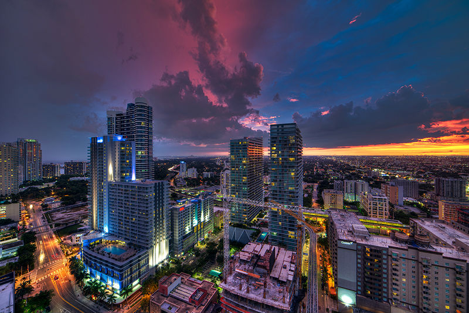

前不久，《Euromonitor International》公布了一组百名旅游城市的名单，排名则是依据各城市的国际旅客造访数量。历来以时尚浪漫吸引游客的巴黎、伦敦、罗马等欧洲旅游城市依旧提交满意答卷，而值得注意的是，在前20名当中就有11个是亚洲城市，难道还是亚洲的自然风光更加怡人？香港、广州、深圳、台湾等城市也是榜上有名，编辑这就带来前20名城市名单，快来看看你都去过哪些吧！
No.20 迈阿密，美国 (Miami) / 630万人
No. 19 台北，台湾 (Taipei) / 660万人
No. 18 芭达雅，泰国 (Pattaya) / 690万人
No. 17 麦加，沙乌地阿拉伯 (Mecca) / 750万人
No. 16 广州，中国 (Guangzhou) / 760万人
No. 15 普吉岛，泰国 (Phuket) / 800万人
No. 14 罗马，意大利 (Rome) / 860万人
No. 13 首尔，南韩 (Seoul) / 860万人
No. 12 杜拜，阿拉伯联合大公国 (Dubai) / 1050万人
No. 11 伊斯坦堡，土耳其 (Istanbul) / 1050万人
No. 10 安塔利亚，土耳其 (Antalya) / 1111万人
No. 9 吉隆坡，马来西亚 (Kuala Lumpur) / 1120万人
No. 8 深圳，中国 (Shenzhen) / 1170万人
No. 7 纽约，美国 (New York City) / 1180万人
No. 6 澳门 (Macau) / 1420万人
No. 5 巴黎，法国 (Paris) / 1520万人
No. 4 伦敦，英国 (London) / 1670万人
No.3 曼谷，泰国 (Bangkok) / 1740万人
No.2 新加坡 (Singapore) / 2240万人
No.1 香港 (Hong Kong) / 2550万人
